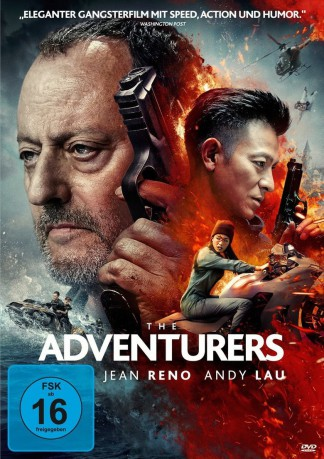

#8093 The Adventurers
 gesehen am 24.01.2018
gesehen am 24.01.2018
 
 IMDB-Wertung: 5.6 / 10
IMDB-Wertung: 5.6 / 10  Metascore: 47
Metascore: 47 
Wer einmal im Sumpf des Verbrechens gelandet ist, kommt nie wieder da raus – dieser Ansicht ist zumindest der knallharte Kommissar Pierre (Jean Reno). Der chinesische Meisterdieb Zhang Dan (Andy Lau) will es nach seiner Entlassung aus dem Gefängnis trotzdem wagen, ein normales Leben zu führen. Aber bevor er sich in den Ruhestand verabschiedet, muss noch ein allerletztes krummes Ding gedreht werden. In Europa haben es er und seine Mitstreiter auf ein legendäres Kollier abgesehen. Dieses zu stehlen verlangt ihnen aber alles ab. Und dann ist da noch Pierre, der ihnen dicht auf den Fersen ist und die Diebesbande quer durch den Kontinent jagt. Und dabei erhält er auch noch Unterstützung von Dans aufgebrachter Ex-Freundin. Können er und seine Kollegen den Coup erfolgreich durchführen und das Kollier in ihren Besitz bringen?
Jahr: 2017
Dauer: 107 Minuten
FSK: 16
Land: China Studio: Gravity PicturesTonspuren:
Untertitel: Deutsch,
Auflösung: 1080p (1920x816) Größe: 6277 MB
Genre: Action, Drama, Abenteuer, Krimi
Regisseur:  Stephen Fung
Stephen Fung
Drehbuch: Chi Kwong Cheung
Soundtrack: Tuomas Kantelinen
Darsteller:
 Jean Reno als Pierre
Jean Reno als Pierre Qi Shu als Red Ye
Qi Shu als Red Ye Andy Lau als Zhang Dan
Andy Lau als Zhang Dan Jingchu Zhang als Amber Li
Jingchu Zhang als Amber Li Eric Tsang als Kong
Eric Tsang als Kong Karel Dobrý als
Karel Dobrý als - Tony Yo-ning Yang als Chen Xiao-Po
- Wonjin Hahn als
- Adam Vacula als
 David Bowles als
David Bowles als  Gen Seto als Wolanyk
Gen Seto als Wolanyk- Yi Sha als Charlie Luo
- Tianyi You als Tingting
- Daniel Svoboda als Guard
- Eric da Costa als Security Captain
- Teresa Trnková als
- Jeff Fritz als Butler
- Yiqun Zhang als
- Bure Li als Helicopter Gunner
Datei: X:\2017(A-F)\Adventurers, The (2017, FSK16, 1920x816).mkv seit 24.01.2018
Festplatte: HD 2017(A-Z)-2018(A-F)
 Es gibt insgesamt 152 Filme in der Gruppe '2017(A-F)'
Es gibt insgesamt 152 Filme in der Gruppe '2017(A-F)'